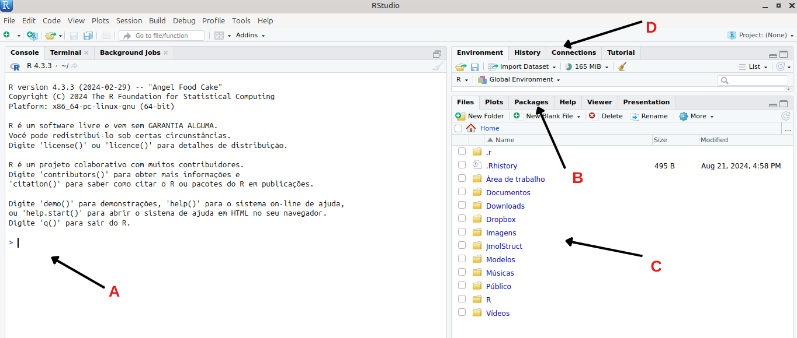
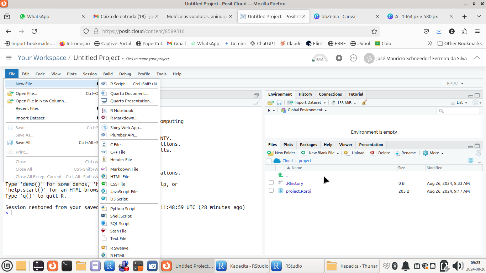
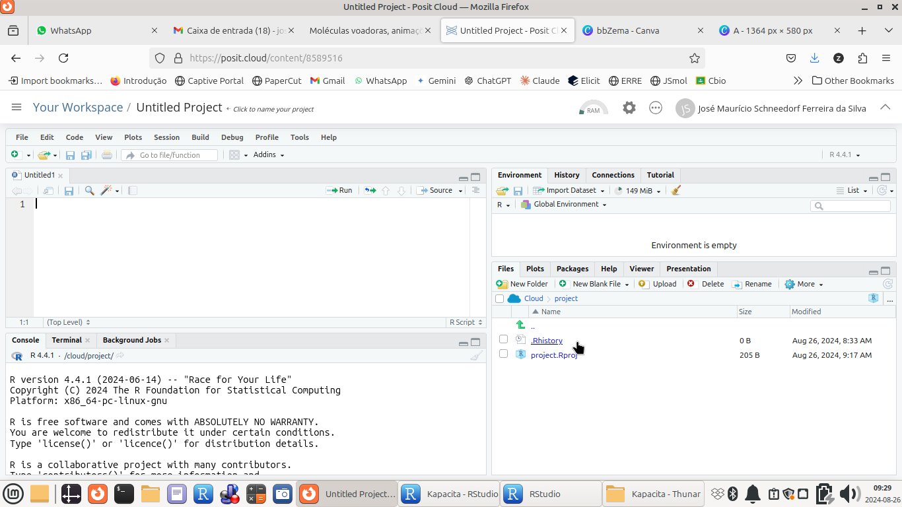

File --> New File --> RScript
... ou por atalho:Ctrl + Shift + NComandos básicos & Scripts no R
O
R é um programa que opera por linha de comando. Isso é um pouco chato, como já visto, porque qualquer erro na digitação de um comando resulta na interrupção do código. Mas, por outro lado, e também como já visto, linhas de comando encadeadas e comentadas permitem a reprodução e modificação de trechos de códigos convergentes a um produto qualquer, no caso, objetos didáticos ao ensino médio. Diferente do Jmol, contudo, não é possível mesclar fonte maiúsculas ou minúsculas, bem como singular ou plural. Para que o código funcione, é necessário sua correta digitação. Mas pode-se tranquilamente aumentar ou reduzir o espaço entre comandos, o que não faz diferença pro compilador do
R. Algumas operações são realizadas alternativamente por mouse, linha de comando, ou ambos, dependendo da ação. A seguir serão apresentadas algumas funcionalidades básicas para a reprodução de códigos para objetos didáticos, sem descrições detalhadas da operação própria do R & RSTudio, para simplificar e tornar mais objetivo este trabalho. Se você desejar saber mais a respeito de ambos os programas, versão instalada ou em nuvem, sugerimos os inúmeros sites e tutoriais disponíveis na internet, bem como centenas de livros já escritos no assunto, e cursos on-line em várias plataformas de ensino.
Uma visão da interface RStudio
| O Rstudio nada mais faz do que permitir uma interace gráfica para o usuário do R (ou GUI, do inglês) , esse um programa estritamente rodado por uso de códigos. Diversas operações podem então realizar-se sem comandos ou códigos, como abrir e salvar um arquivo, ou visualizar um gráfico, por exemplo. Vejamos a divisão da janela principal do Rstudio.

Para nosso trabalho, contudo, será interessante uma área adicional, a área de scripts, a qual se acessa como segue:

Veja que agora a janela principal se divide em quatro partes, incluindo a aba nova para scripts.

Como funcionam os comando no R
Todos os comandos do
R são compostos por um nome seguido de argumentos entre parênteses. Não é necessário a especificação de todos os argumentos; normalmente bastam de 1 a 3. Seguem exemploscomando(argumento 1, argumento 2, argumento 3, ...)
Exemplos:
plot(x,y)
mean(z)
read.csv(file = "meus.dados.csv") Para se conhecer os argumentos de um comando, basta você começar a digitá-lo, tanto na área de prompt (canto inferior esquerdo) como na área de script, que o sistema apresenta temporariamente as opções. Se desejar visualizar essas opções por linha de comando, contudo, digite função
args seguido do comando desejado, como segue:args(plot)Elaborando e executando um script no R
Para se produzir um script no
R, basta redigir as linhas de comando de modo similar ao que foi realizado com o visualizador molecular 3D Jmol, ou seja, separando os comandos por ponto e vírgula, ou por linhas individuais, usado a tecla Enter :x = 5
x^2 +7 E para executar o script acima, basta copiá-lo e colá-lo na área de script aberta. E aí vai uma dica de ouro. Veja que no canto superior direito do script existe um ícone de colagem do texto do script. Basta clicar nesse ícone que o texto estará copiado.
Agora é só colar na aba do script aberto (em nuvem, por exemplo) e executá-lo seguindo-se alternativamente as seguintes ações:
1. Se deseja executar algumas linhas de um *script*, pode-se selecionar as linhas e clicar Ctrl + Enter ;
2. Se desejar executar todo o *script*, seleciona-se todo o texto (Ctrl + A) seguido da ação acima, Ctrl + Enter ;
Opcionalmente, pode-se clicar no ícone "-->Source" ;
3. Se desejar executar apenas uma linha, basta clicar na linha seguido de Ctrl + Enter ;
Opcionalmente, pode-se clicar no ícone "-->Run" ;Algumas recomendações sobre a digitação num script do R:
Existem algumas condições básicas pra que um script do
R seja lido de forma clara por seu elaborador, bem como compilado corretamente pelo programa:- Digitação: sempre que tem um erro no script no Rstudio, surge um sinal em vermelho ao lado esquerdo da linha de comando; contornado o erro, o sinal desaparece;
- Comentários: para que o script seja lido também por “um ser humano”, é aconselhável tecer comentários nas linhas de comando (iniciados por # );
- Identação: permita “identação” quando a linha estiver um pouco longa, clicando na tecla Enter após uma separação de argumentos por “vírgula”. Dessa forma, a linha continua logo abaixo, mas com um pequeno deslocamento à direita. Isso facilita a legibilidade do código.
- Nomes: os comandos do
Rsão em língua inglesa. Dessa forma, deve-se evitar o uso de variáveis e nomes de arquivos com acentuação ou sinais gráficos do Português (ex: ç). Além disso, oRé um compilador de códigos. Se você definir um nome composto para um arquivo ou variável, ou seja, com espaço entre os termos (como é normal no cotidiano), oRtentará executar os termos separadamente, o que levará em erro. Assim, para nomes de variáveis e arquivos, dê preferência a um dos 3 tipos de convenções comuns usadas em programação, a saber:
- separação por underline, ” _ “ ou hífen; ex: minha_variável, minha-variável
- separação por maiúscula; ex: minhaVariável
- separação por pontos; ex: minha.variável